Grafisch ontwerp · concept · beeld
Heldere ideeën.
Beelden die iets doen.
Ik ben Ivo de Boer, grafisch ontwerper. Ik help om complexe verhalen helder, aantrekkelijk en activerend te maken.
Geselecteerde projecten
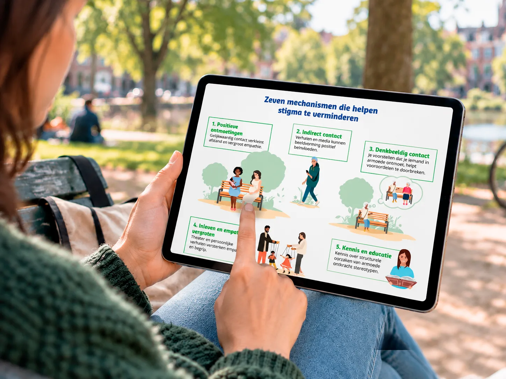
Hoe breng je een complex maatschappelijk onderzoek terug tot twee A4’tjes, zonder dat de essentie verloren gaat?
Voor Movisie vertaal ik samen met communicatie-experts complexe onderzoeken naar heldere, beeldende infographics. We beginnen met een kop koffie en een goed gesprek. Wat staat hier nu echt? Wat moet de lezer begrijpen? En wat kan weg?
Samen zoeken we naar de kern en naar een vorm die daarbij past. Soms is dat een sterke metafoor en soms zijn het juist de cijfers. En soms blijkt drie korte stukken tekst, afgewisseld met beeld, veel beter te werken dan een doorlopend verhaal.
Juist die zoektocht vind ik interessant. De inhoudelijke experts kennen het onderwerp door en door; ik stel vragen, breng structuur aan en zoek naar manieren om de informatie zichtbaar te maken. In de schetsfase vallen de puzzelstukjes op hun plaats.
Het mooiste compliment? Als onderzoekers vooraf zeggen dat hun onderzoek onmogelijk in twee A4’tjes samen te vatten is, en achteraf blij zijn dat precies dát toch gelukt is.
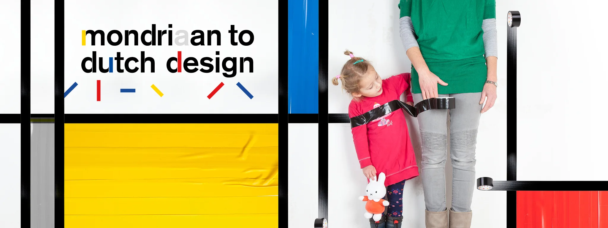
Hoe maak je van kunst en design iets dat niet alleen in het museum leeft, maar in de hele stad?
Voor deze campagne gingen we terug naar de essentie van het thema: wat verbindt Mondriaan met Dutch Design?
Mondriaan experimenteerde met gekleurde tape in zijn atelier. In Dutch Design zagen we dezelfde liefde voor experiment: alledaagse materialen op een onverwachte manier gebruiken, vaak met een eigenzinnige twist. In die overlap vonden we ons campagnebeeld: een simpele rol ducttape.
In de campagne zie je mensen de tape gebruiken om vlakken te maken. Zo ontstaan Mondriaanachtige beelden, maar dan met een knipoog. Door gewone mensen in de beelden te gebruiken, werd de campagne toegankelijk en uitnodigend voor een breed publiek.
Dat idee trokken we door naar de stad. We maakten pakketten waarmee winkeliers zelf aan de slag konden, je kon je fiets pimpen met tape en er kwam een speciale fietsroute. Zo bleef de campagne niet binnen de muren van musea en culturele instellingen, maar werd de hele stad onderdeel van het verhaal.
Samen met Peter van Dorst
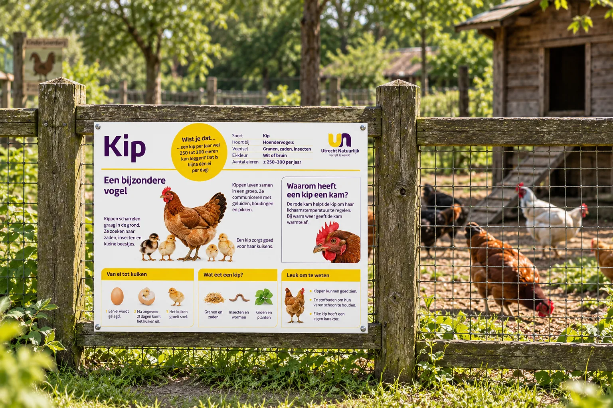
Hoe geef je een nieuwe groene organisatie een eigen gezicht?
Toen de Utrechtse stadsboerderijen en stadstuinen verdergingen als zelfstandige organisatie Utrecht Natuurlijk, moest er ook een nieuw gezicht komen. Een herkenbare identiteit waarmee de organisatie zichtbaarder werd in de stad en een breder publiek kon bereiken.
Samen met Peter van Dorst ontwikkelde ik een identiteit die je van een afstand al herkent. De letters U en N vormen een krachtig beeldmerk en de felle contrastkleuren blijven ook tussen al het groen overeind. Bijna als een baken: hier is Utrecht Natuurlijk.
Het was belangrijk dat medewerkers op den duur ook zelf uitingen konden maken. Met verschillende soorten fotografie en zonder dat er altijd een ontwerper aan te pas hoefde te komen. Daarom maakten we de grafische taal eenvoudig en uitgesproken, zodat de identiteit ook dan overeind blijft.
Vanuit die basis maakten we campagnes om Utrecht Natuurlijk bekender te maken, informatieborden bij de dieren, een website, tentoonstellingen en allerlei andere middelen. Steeds herkenbaar als Utrecht Natuurlijk, maar met genoeg ruimte om iets nieuws te bedenken.
Het mooiste bewijs zie ik nog steeds als ik door Utrecht fiets. Ruim tien jaar later kom ik de kleuren, dierenborden en campagnes nog overal tegen. De organisatie is verder gegroeid én de identiteit staat nog steeds overeind.
Samen met Peter van Dorst
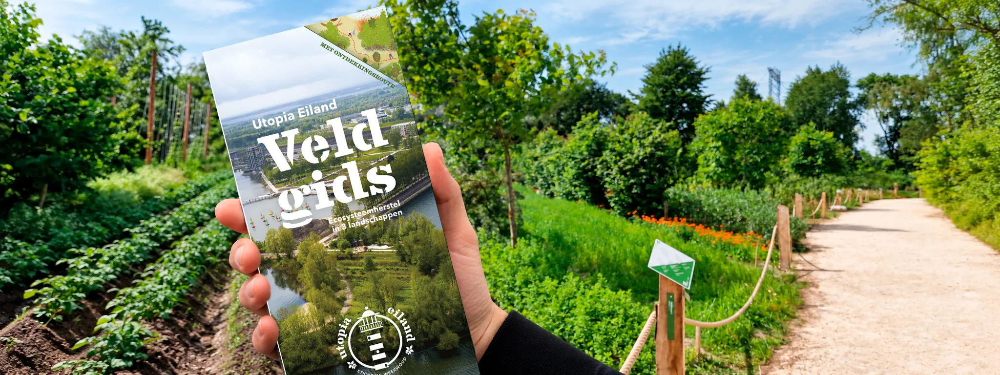
Hoe maak je het complexe verhaal van ecosysteemherstel begrijpelijk voor een breed publiek?
Al vroeg in de ontwikkeling van Utopia Eiland vroeg initiatiefnemer Xavier me mee te denken over hoe het eiland zich naar buiten kon presenteren. Maar vooral ook: hoe zorg je ervoor dat bezoekers én geïnteresseerden daarbuiten begrijpen wat hier gebeurt?
Want veel van wat Utopia Eiland bijzonder maakt, zie je niet meteen. Bomen, struiken, gewassen, dieren en bodem werken er samen in verschillende systemen. Een takkenril blijkt een leefplek voor allerlei dieren en achter een voedselbos of een akker met bomen zit een heel verhaal over biodiversiteit, voedselproductie en herstel van de bodem.
Samen met Xavier liep ik veel over het eiland. Wat wil je hier vertellen? Wat moet iemand op deze plek kunnen zien? En hoeveel informatie is eigenlijk nodig? Zo ontstonden verschillende lagen, die ik samen met Peter van Dorst vormgaf. Grote kaarten geven overzicht, informatieborden leggen bijvoorbeeld het landbouwsysteem agroforestry uit en een route met genummerde keien laat bezoekers het eiland zelf ontdekken.
We maakten bewust niet overal opvallende bordjes. De routeaanduidingen werden op grote stenen gestencild en de informatie kreeg een plek waar die iets toevoegt. Wie meer wil weten, kan verder lezen op de website of in het boek dat we voor het eiland maakten.
Dat vind ik misschien wel het mooiste aan dit project: vormgeving toevoegen zonder de plek over te nemen. Zorgen dat een kind iets kan ontdekken, een toevallige bezoeker begrijpt waar hij naar kijkt en iemand die alles over voedselbossen wil weten verder de diepte in kan.
De juiste informatie, voor de juiste bezoeker, op de juiste plek.
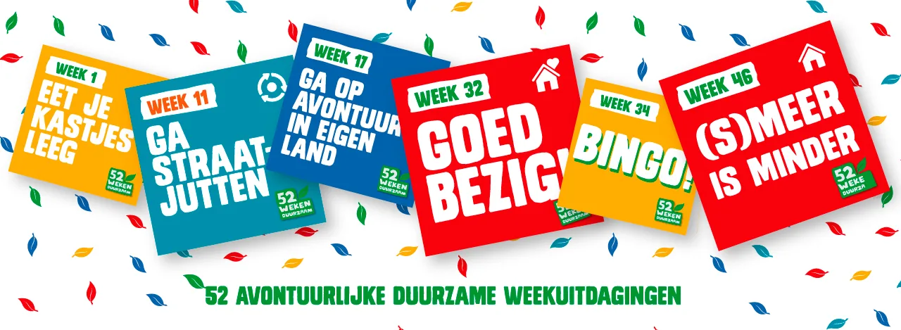
Wat gebeurt er als een groepje vrienden zegt: we gaan het gewoon doen!
In 2020 begonnen we met een eenvoudig idee: een jaar lang iedere week één kleine duurzame stap onderzoeken, hem zelf uitproberen en anderen uitnodigen om mee te doen. We maakten een filmpje en dachten dat het leuk zou zijn als een paar duizend mensen ons zouden volgen.
In de eerste week meldden zich al 5.000 mensen aan. Twee weken later waren het er bijna 10.000. Vanaf dat moment was het geen klein experiment meer. Iedere week doken we in een nieuw onderwerp, zochten uit wat écht verschil maakte en bedachten hoe we daar een leuke en haalbare uitdaging van konden maken.
Het ene moment aten we onze keukenkastjes leeg, het volgende ontdekten we dat veel cv-ketels onnodig hoog stonden ingesteld. We maakten 52 filmpjes, challenges, een website, nieuwsbrieven en social posts. Later kwamen daar onder andere een spel, boekjes, podcasts, festivals en acties bij.
Wat begon als een klein groepje vrienden met een idee, groeide uit tot een community van meer dan 25.000 deelnemers die elkaar aanmoedigden en ervaringen deelden. En ondertussen stapten we zelf voortdurend buiten onze comfortzone. We zongen tijdens de voorjaarsschoonmaak, gingen op avontuur in eigen land en bedachten iedere week opnieuw hoe we mensen konden verleiden om iets uit te proberen.
Wat ik daarvan heb meegenomen? Er kan ontzettend veel als je samen je schouders eronder zet. Soms heeft een idee een filmpje nodig, soms een spel, een campagne of iets wat nog niet bestaat. En het leukste wordt het wanneer verschillende mensen hun kennis en talent bij elkaar leggen en er iets ontstaat wat niemand alleen had kunnen maken.
We gaan het gewoon doen. Dat motto is na 52 Weken Duurzaam eigenlijk altijd blijven hangen.
Samen met vrienden: Caro Buiskool en Serge Calon, en vele anderen
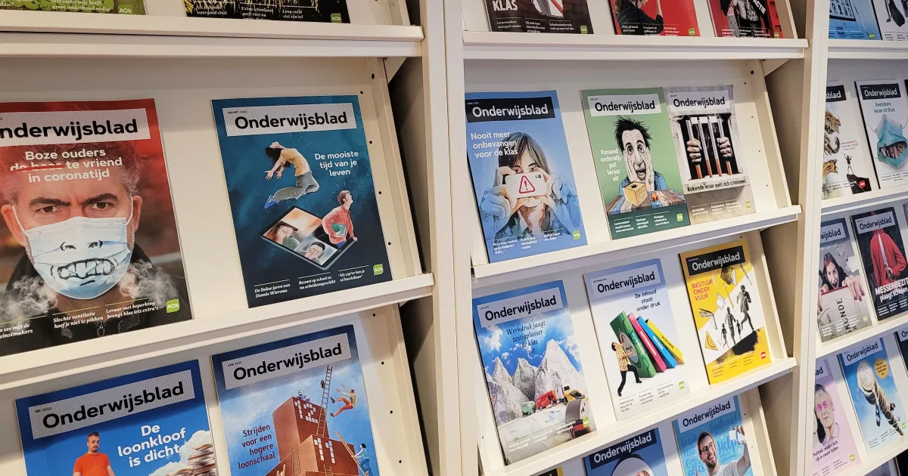
Hoe zorg je dat een samenwerking na twintig jaar nog steeds blijft verrassen?
Onze samenwerking met de Algemene Onderwijsbond begon met het Onderwijsblad. De vraag was om van een verenigingsblad een magazine te maken. Inmiddels werken we er al bijna twintig jaar aan en is het nog steeds een van de opdrachten waar we iedere keer weer met plezier induiken.
Een paar weken voor een nummer zitten we met de redactie aan tafel. Welke verhalen komen erin? Wat kunnen fotografie, illustratie of infographics aan een verhaal toevoegen? Kan een artikel ook op een heel andere manier worden verteld? We denken mee over de artdirection en vormgeving. Zelf vind ik het leuk om ook inhoudelijk mee te denken en draag ik regelmatig onderwerpen of ideeën aan. De ene keer ontstaat een beeld dat een heel artikel draagt, de andere keer een infographic of een onverwachte manier om informatie te ordenen.
Vanuit het ontwerpen van het blad ontstond veel meer. Voor de AOb maakten we campagnes, acties, infographics, boekjes en allerlei andere middelen. Soms serieus en inhoudelijk, soms uitgesproken of met humor. Zoals Dat zijn je collega’s, waarin we niet de voordelen van de bond centraal zetten, maar de mensen die samen de bond vormen: van de duo-baan-collega tot de druk-druk-druk-collega.
Juist doordat we de organisatie en het onderwijs inmiddels goed kennen, kunnen we makkelijk schakelen tussen heel verschillende vragen. De ene keer brainstormen we met de redactie over een verhaal, de andere keer ontstaat er een campagne, een boekje of een guerrilla-actie.
Misschien vind ik dat wel het mooiste aan zo'n lange samenwerking: je bouwt steeds voort. En zelfs na twintig jaar valt er iedere keer weer iets nieuws te ontdekken.
Samen met Peter van Dorst en René van den Berg
Dit is Ivo
Een goed ontwerp begint met vragen stellen.
Als je diep in een onderwerp zit, is het soms lastig om nog met de blik van een buitenstaander te kijken. Juist daar stap ik graag in. Ik stel vragen, duik in de inhoud en probeer helder te krijgen waar het werkelijk over gaat. En vooral: voor wie maken we dit? Wat wil of moet diegene begrijpen, weten of doen?
Dat doe ik het liefst samen met de mensen die er alles van weten: onderzoekers, redacteuren, inhoudelijke experts of mensen die al jaren met een idee rondlopen. Zij kennen de inhoud, ik kijk er met een frisse blik naar en help om de kern boven tafel te krijgen.
Van daaruit zoek ik naar de vorm die daarbij past. Dat kan een identiteit of campagne zijn, maar net zo goed een infographic, boek, website, film, informatiebord of spel. Het middel staat voor mij niet voorop. Soms is één sterk beeld genoeg, soms moet er een heel systeem worden gebouwd.
Ik hou van ingewikkelde onderwerpen, maar niet van ingewikkeld doen. Het leukste moment is wanneer losse informatie bij elkaar begint te komen en er ineens een eenvoudig idee ontstaat waarvan je denkt: ja, dit is ’m.
En ik werk graag samen. Een project wordt beter wanneer verschillende mensen hun kennis en talent bij elkaar brengen.
Misschien past we gaan het gewoon doen daarom zo goed bij mij. Eerst goed kijken, bevragen en nadenken. Maar vervolgens ook maken, proberen, ontdekken en doen.
Werkte onder andere voor
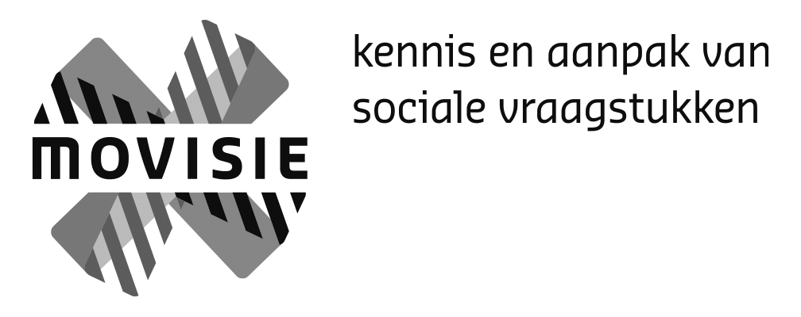
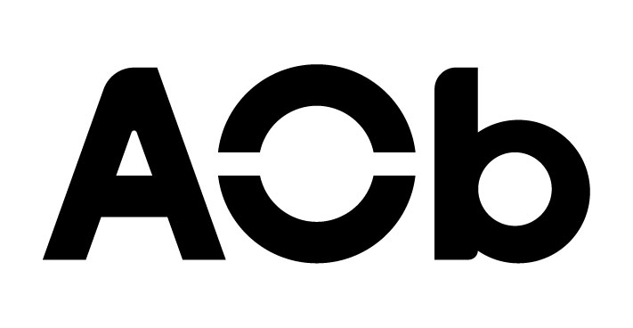
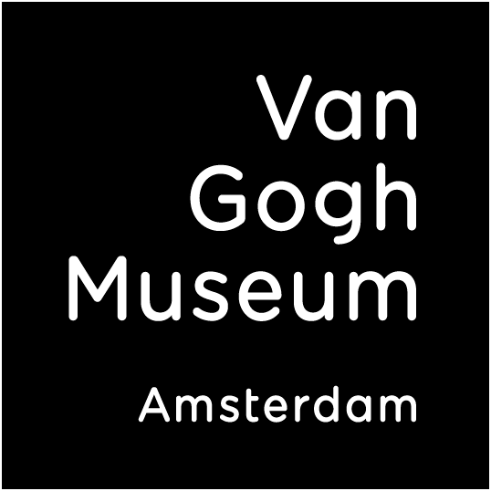
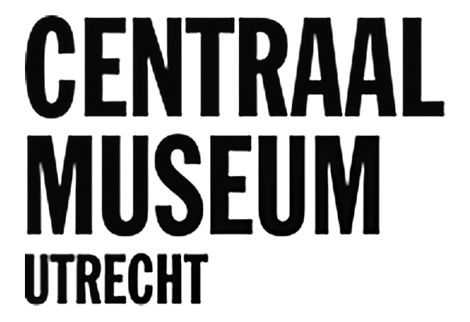
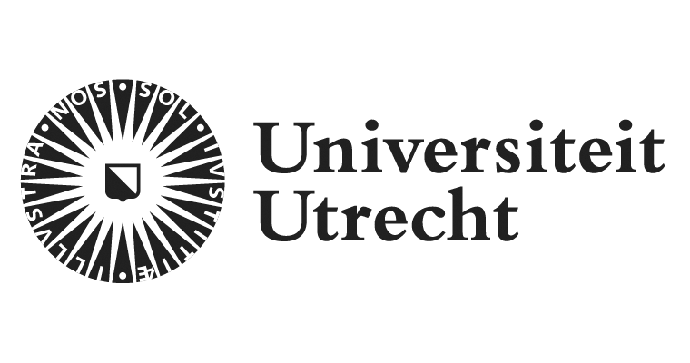
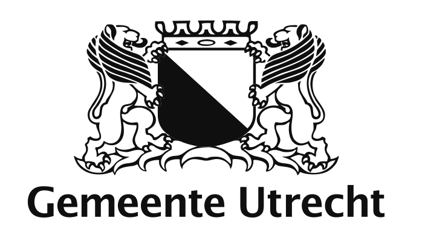
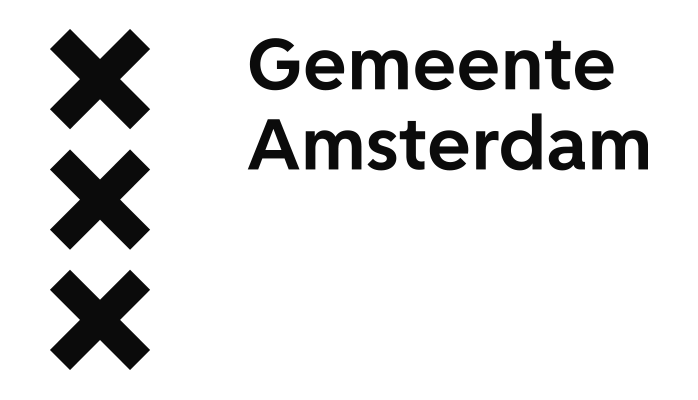
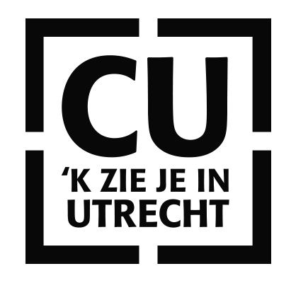
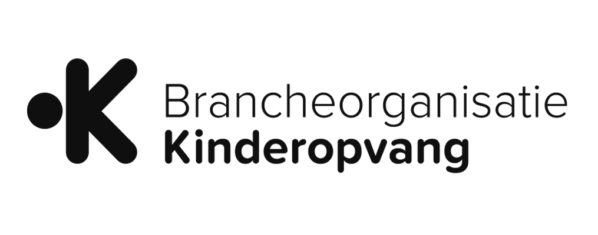

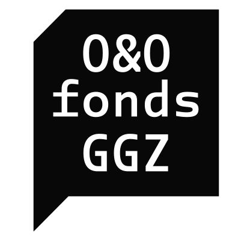
CatharijneConvent
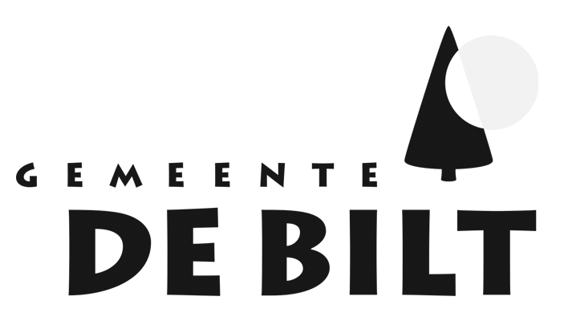

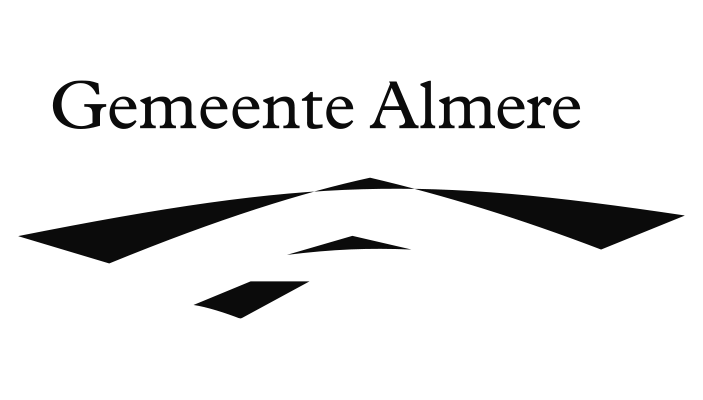
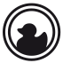